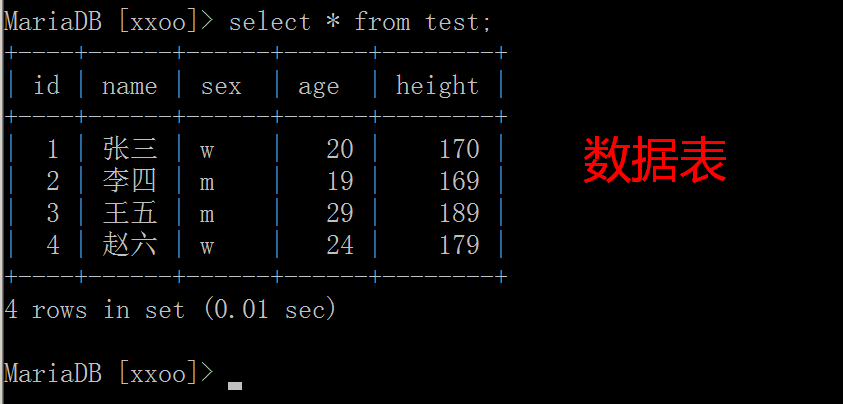

MySQL基础操作
使用方法:
方式一: 通过图型界面工具,如 Navicat 等( 高级课使用 )
方式二: 通过在命令行敲命令来操作 ( 基础阶段使用 )
SQL ( Structure query language ) 结构化查询语言
SQL语言分为4个部分：DDL（定义）、DML（操作）、DQL（查询）、DCL（控制）
SQL语句中的快捷键
\G 格式化输出（文本式，竖立显示）
\s 查看服务器端信息
\c 结束命令输入操作
\q 退出当前sql命令行模式
\h 查看帮助
操作数据库的步骤
连接, 打开库, 操作, 关闭退出
1.通过命令行连接MySQL

数据库语法的特点
1) SQL 语句可以换行, 要以分号结尾

2) 命令不区分大小写. 关键字和函数建议用大写
3) 如果提示符为 '> 那么需要输入一个'回车
4) 命令打错了换行后不能修改, 可以用 \c 取消
2. 数据库操作
查看数据库 show databases;
创建数据库 create database 库名 default charset=utf8;
删除数据库 drop database 库名;
打开数据库 use 库名;
3. 数据表操作
数据库管理系统中, 可以有很多库, 每个数据库中可以包括多张数据表


查看表: show tables;
创建表: create table 表名(字段名1 类型,字段名2 类型)engine=innodb default charset=utf8;
创建表: 如果表不存在,则创建, 如果存在就不执行这条命令
create table if not exists 表名(
字段1 类型,
字段2 类型
);
删除表: drop table 表名;
表结构: desc 表名;
4. 记录操作 增删改查
插入 insert into 表名(字段1,字段2,字段3) values(值1,值2,值3);
insert into 表名(字段1,字段2,字段3) values(a值1,a值2,a值3),(b值1,b值2,b值3);
查询 select * from 表名;
select 字段1,字段2,字段3 from 表名;
select * from 表名 where 字段=某个值;
修改 update 表名 set 字段=某个值 where 条件;
update 表名 set 字段1=值1,字段2=值2 where 条件;
update 表名 set 字段=字段+值 where 条件;
删除 delete from 表名 where 字段=某个值;
四. 退出MySQL
exit; 或者 quit;